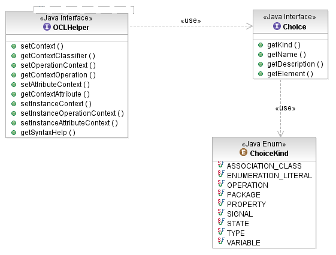

The OCLHelper API provides support for content-assist in rich editors, by parsing partial OCL expressions and supplying completion suggestions. The List<Choice> getSyntaxHelp(ConstraintKind, String) operation returns a list of suggestions for the next token to follow the end of the expression fragment.

[as SVG]
The Choice objects returned by the helper include some convenient text strings (name and description) to formulate basic JFace content-assist proposals. Each choice also carries a reference to the element that it represents, the kind of element indicated by the ChoiceKind enumeration, for a more sophisticated content assist that might inlude context information, documentation, etc. as in Eclipse JDT. The list of choices depends in part on the kind of constraint expression that is to be completed, as for example, the oclIsNew() operation is only permitted in operation post-conditions.
helper.setContext(EXTLibraryPackage.Literals.BOOK);
List<Choice> choices = helper.getSyntaxHelp(ConstraintKind.INVARIANT,
"Book.allInstances()->collect(author)->");
for (Choice next : choices) {
switch (next.getKind()) {
case OPERATION:
case SIGNAL:
// the description is already complete
System.out.println(next.getDescription());
case PROPERTY:
case ENUMERATION_LITERAL:
case VARIABLE:
System.out.println(next.getName() + " : " + next.getDescription();
break;
default:
System.out.println(next.getName());
break;
}
}
The computation of Choices is supported for the following tokens, which may be used by a client as auto-assist triggers:
| Token | Completion choices |
|---|---|
| . | Features applicable to the type of the expression to the left of the dot, or its element type if it is a collection. These choices include properties, operations, and association classes (in the UML environment only) |
| -> | Collection operations and iterators |
| :: | Packages, types, enumeration literals, and states (in the UML environment only) |
| ^ | Operations and signals (in the UML environment only) |
| ^^ | |
In other situations, the choices
the current context variables and implicit references to features of
the self variable. For example, if the input
is something like "" or "self.isOrdered and " |
The completion of partially specified identifiers is also supported, by backtracking to look for one of these triggering tokens. This supports interactively narrowing the choices while the content-assist window is active.
choices = helper.getSyntaxHelp(ConstraintKind.POSTCONDITION,
"self.author.oclIs");
Copyright (c) 2000, 2007 IBM Corporation and others. All Rights Reserved.